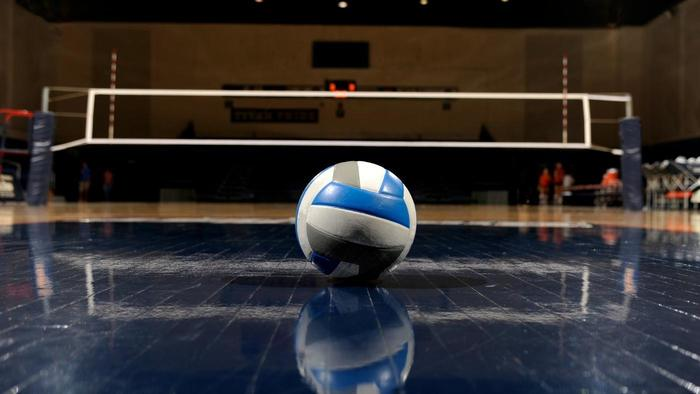
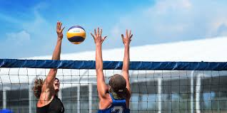
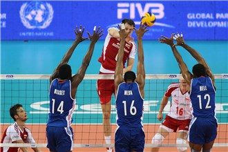
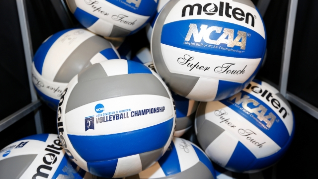
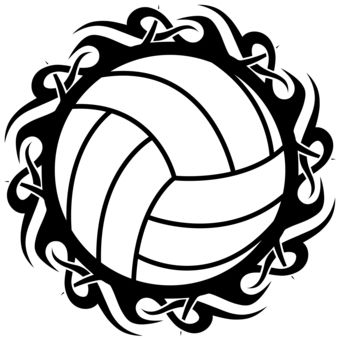

Le volley-ball se pratique le plus souvent en salle. Le terrain a une forme rectangulaire de 18 mètres de longueur sur 9 mètres de largeur. Les lignes de délimitation sont à l'intérieur du terrain. Une ligne centrale s'étend sous le filet sur toute la largeur du terrain et sépare les deux camps. Une ligne d'attaque est peinte au sol dans chaque moitié de terrain, à 3 mètres du filet ; elle est communément appelée « ligne des 3 mètres ».Les dimensions du terrain de volley ne varient jamais.(2 camps de 9 m x 9 m chacun que ce soit pour une équipe minime ou internationale.)
Chaque équipe occupe une moitié du terrain séparée de l'autre par un filet d'un mètre de haut, dont la partie supérieure est placée à une hauteur variable en fonction de la catégorie d'âge des joueurs ou joueuses :
| Catégorie | Masculins | Féminines |
|---|---|---|
| Seniors | 2,43m | 2,24m |
| M20 | 2,43m | 2,24m |
| M17 | 2,35m | 2,24m |
| M15 | 2,24m | 2,10m |
| M13 | 2,10m | 2,10m |
| M11-M9 | 2m | 2m |
Deux antennes (barres verticales également appelées « mires ») sont accrochées au filet à hauteur des limites du terrain (le filet est généralement plus large que ce dernier). Le ballon doit passer entre ces antennes lors des échanges entre équipes lors des phases de jeu. Deux bandes blanches, accolées aux antennes, sont situées sur le filet à la verticale des lignes de côté.
 Le ballon de volley-ball est plus souple et plus léger que celui de football. Il doit avoir une circonférence comprise entre 65 et 67 cm, une masse comprise entre 260 et 280 g et une pression comprise entre 0,30 et 0,3257 kg/cm3. Depuis 1978, pour diminuer le temps de jeu, trois ballons sont utilisés lors des rencontres internationales et nationales. Finies les pertes de temps pour le récupérer au service, puisque quatre ramasseurs de balles sont placés autour du terrain. Ce système a permis une diminution d'environ 20 % du temps de jeu.
 